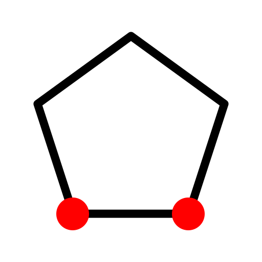
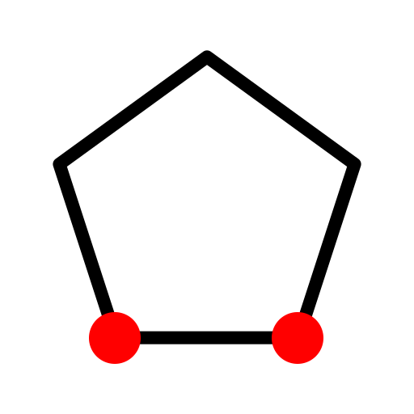
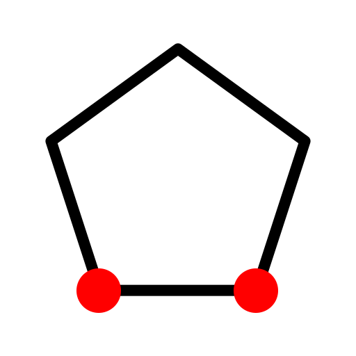
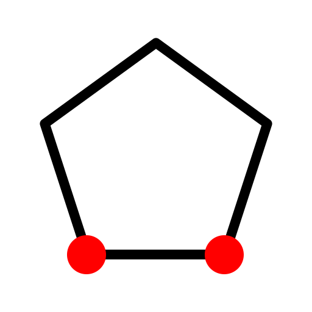
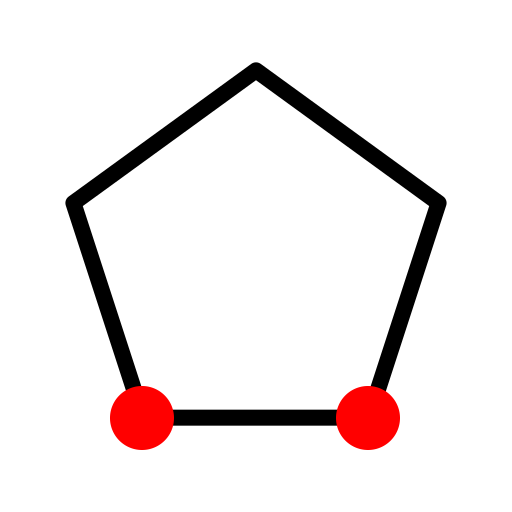

Polygon (2 Points of Side) (P, G, 2)
ツールバー/アイコン:

メニュー:
D 描画 > S 成形 > Polygon (2 Points of Side) (P, G, 2)
コマンド:
linepolygon2 | polygon2 | pg2
説明:
2つの頂点を与えて、多角形を作成します。
手順:
オプション・ツール・バーに多角形の端/角の数を入力します。
有効な数は3〜99です。
マウスあるいはコマンドラインの中で座標を入力して、多角形の最初の頂点をセットしてください。
多角形の第2の頂点をセットします。
 


